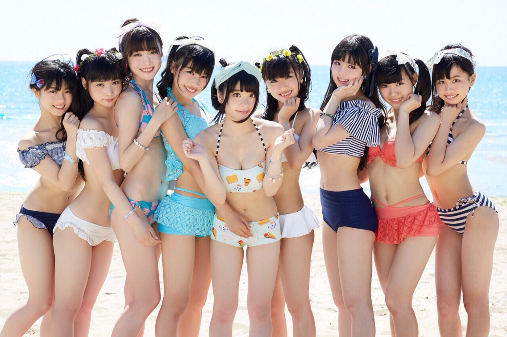

Top Beach Resorts and Stays in Japan for 2025
Dreaming of a coastal escape in Japan? 🏖️ Whether you’re seeking luxury oceanfront stays, island villas, or peaceful seaside inns, Japan offers a wide range of stunning beach resorts and stays that blend modern comfort with natural beauty. At Umitales, we’ve handpicked the best beachside getaways across Okinawa, Shonan, and beyond — perfect for your 2025 travel plans.

🌴 1. Halekulani Okinawa – The Luxury Icon
Located on the stunning Onna coast, Halekulani Okinawa is the crown jewel of Japan’s beach resorts. With infinity pools overlooking emerald seas, spacious rooms, and Michelin-level dining, it’s perfect for couples and honeymooners. The resort offers direct access to coral reefs and private beaches — ideal for snorkeling and diving. If you’re torn between island destinations, check our comparison guide Okinawa vs. Shonan: Which Beach Destination Is Right for You?.

🏝️ 2. ANA InterContinental Ishigaki Resort – The Island Paradise
Overlooking Maesato Beach in the Yaeyama Islands, this resort captures the essence of tropical Japan. Guests enjoy multiple pools, local cuisine, and guided tours of coral reefs and mangrove forests. It’s a great choice for families who want both adventure and relaxation. Don’t miss exploring nearby beaches listed in our guide on Hidden Beaches in Japan Only Locals Know About.
🌅 3. Kamakura Prince Hotel – Coastal Comfort Near Tokyo
For travelers who prefer convenience without sacrificing charm, the Kamakura Prince Hotel sits right above Shichirigahama Beach — offering panoramic ocean views and easy access to Enoshima Island. Just an hour from Tokyo, it’s one of the best beach stays for weekend getaways. Summer visitors can also enjoy the vibrant energy of nearby Shonan. Plan your trip using our Seasonal Guide to Japan’s Beaches.

🌺 4. The Terrace Club at Busena – Okinawa’s Wellness Escape
Tucked along Nago’s tranquil coast, this adults-only resort focuses on wellness, peace, and privacy. Guests can enjoy ocean-view saunas, thalassotherapy pools, and yoga sessions by the beach. The Terrace Club at Busena is where luxury meets mindfulness — a must for those seeking a rejuvenating escape.
🌤️ 5. Nemu Resort, Mie – Nature, Golf, and Serenity
Set along Ago Bay in Mie Prefecture, Nemu Resort offers a different kind of beach experience. Surrounded by pine forests and calm coves, it’s perfect for travelers who want to connect with nature. Guests can enjoy sailing, cycling, and golf — all within view of the shimmering sea. The resort’s eco-friendly initiatives make it a leader in sustainable travel for 2025.
🏖️ 6. Shigira Bayside Suite Allamanda – Miyakojima’s Hidden Gem
On the island of Miyakojima, Allamanda offers private villa-style suites with personal pools overlooking turquoise waters. It’s one of Japan’s most luxurious but lesser-known beach resorts — and ideal for couples who want exclusivity. Explore nearby coral gardens or enjoy spa treatments that use local sea minerals.
🍃 7. Ryukyu Onsen Senagajima Hotel – A Hot Spring by the Sea
Where else can you soak in a seaside onsen while watching planes glide into Okinawa? Senagajima Hotel combines the calm of a hot spring retreat with ocean views that stretch endlessly. Its rooftop infinity bath is especially magical at sunset — the perfect way to unwind after a day at Japan’s Top 10 Beaches.
🌊 8. Ise-Shima Royal Hotel – Tradition Meets the Sea
This resort blends Japanese aesthetics with ocean views. Tatami-style rooms, traditional meals, and peaceful garden paths make it ideal for those seeking cultural immersion along with beach relaxation. It’s also a great base to explore Mie’s sacred Ise Grand Shrine.
🌴 Final Thoughts
From Okinawa’s five-star havens to Tokyo’s coastal escapes, Japan’s beach resorts offer something for every kind of traveler. Whether you’re after luxury, wellness, or a local experience, 2025 is shaping up to be the perfect year to explore Japan’s shores in style. For more seaside inspiration, check out our guides on Hidden Beaches in Japan and Beach Safety & Etiquette to make your coastal journey unforgettable.